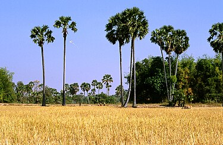
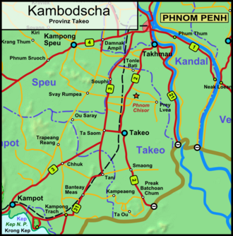
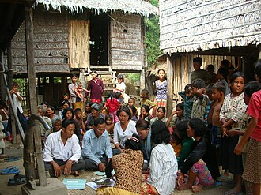

វាលស្រែនៅខេត្តតាកែវ
ខេត្តតាកែវក្នុងផែនទីនៃប្រទេសកម្ពុជា
ខេត្តតាកែវ
|
វាលស្រែនៅខេត្តតាកែវ |
 ខេត្តតាកែវក្នុងផែនទីនៃប្រទេសកម្ពុជា |
ទីតាំងភូមិសាស្រ្ត
|
 ផែនទីភូមិសាស្ត្រខេត្តតាកែវ |
ចំនួនប្រជាជន
|
 ប្រជាជនខ្មែរនៅខេត្តតាកែវ |
រដ្ឋបាល
| ស្រុក/ក្រុង | ឃុំ/សង្កាត់ | ភូមិ |
| ស្រុកអង្គរបូរី | ៦ | ៣៤ |
| ស្រុកបាទី | ១៥ | ១៦៨ |
| ស្រុកបូរីជលសារ | ៥ | ៣៩ |
| ស្រុកគីរីវង់ | ១២ | ១១៥ |
| ស្រុកកោះអណ្ដែត | ៦ | ៦៨ |
| ស្រុកព្រៃកប្បាស | ១៣ | ១១០ |
| ស្រុកសំរោង | ១១ | ១៤៧ |
| ក្រុងដូនកែវ | ៣(សង្កាត់) | ៤០ |
| ស្រុកត្រាំកក់ | ១៥ | ២៤៤ |
| ស្រុកទ្រាំង | ១៤ | ១៥៤ |
រដ្ឋបាលខេត្ត
| អភិបាល | កាន់តំណែង | ប្រភព |
| អ៊ូច ភា | ២៦ មីនា ២០១៨ | ព្រះរាជក្រឹត្យចុះថ្ងៃទី២៦ មីនា ឆ្នាំ២០១៨ |
| ឡាយ វណ្ណៈ | ||
| ស្រី បេន | ||
| កែប ជុតិមា | ||
| ស៊ូ ភីរិន្ទ |
ប្រវត្តិសាស្ត្រ
វត្ថុអនុស្សាវរីយ៍ក្នុងតំបន់
អាកាសធាតុ
ការអភិវឌ្ឍ
សេដ្ឋកិច្ច
ផ្សារ